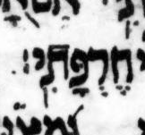

{kind=link}

| חֶרְפָּתִּֽֿי׃
(?) חֶרְפָּתִֽי׃ |
19:5 | דגש fights רפה in μL, maybe, says BHL and WLC but not BHQ |
A דגש on a letter with רפה doesn’t make sense. The color image of μL reveals this דגש to be unlikely. It is judged to be just a speck, not a דגש, in Viktor Golinets, “Dageš, Mappiq, Specks on Vellum, and Editing of the Codex Leningradensis”, KUSATU 15/2013, p. 251 (2013). See 24:16.
BHQ drops the note that BHS has on this quirk. Usually BHQ preserves notes that BHS has on quirks. As usual, we don’t know whether BHQ dropped this note on purpose or by accident.
BHQ silently lets the faint possible דגש “win” over the clear רפה in μL. In my opinion, BHQ should have transcribed either both marks (דגש and רפה) or neither. Thus I consider BHQ to have not accurately transcribed μL here. Also, BHQ should have had a note.
U — M — μL (page 402A, col 2, line -5 (5 counting from bottom of column)):
μA (Aleppo) (page 274v, col 2, line 27, word 7):

μY (Cambridge 1753) (page 78A, col 1, line 4, word 3):
